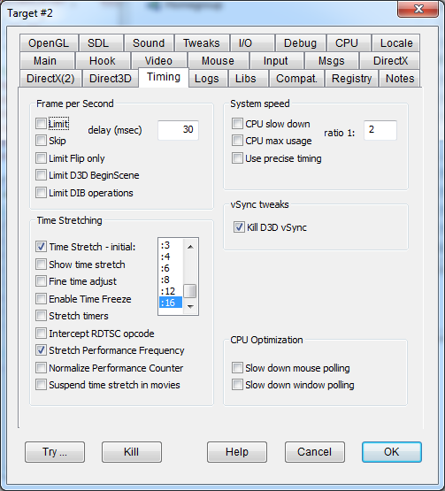

|
Limit |
LIMITFPS |
Introduces a configurable delay between screen refresh operations, so that the FPS is limited accordingly. |
|
Skip |
SKIPFPS |
Introduces no delay in the screen operations, but skips several screen updates so that the actual FPS value is limited without the program noticing it. |
|
delay (msec) |
Sets the delay time, expressed in milliseconds, for both the "Limit" (LIMITFPS) and "Skip" (SKIPFPS) options. To be noted that the FPS is related to the delay by the formula FPS = 1000/Delay or, the other way around, Delay = 1000/FPS. So if, for example, you desire an FPS not greater than 50, the corresponding value to get this effect is Delay = 20msec. Note that a greater delay means a slower frame rate. |
|
|
Limit Flip only |
LIMITFLIPONLY |
When set, both the FPS limitation and FPS count take in consideration only the Flip operations, ignoring any other operation like Blt to primary surface. |
|
Limit D3D BeginScene |
LIMITBEGINSCENE |
Flag to limit FPS in D3D games. Note: If used together with the "limit" flag you will get a doubled delay. |
|
Limit DIB operations |
LIMITDIBOPERATIONS |
Flag to apply delay to GDI32 DIB operations only. Helps improving "Rubik's Games" animations. |
Limiting the FPS may also help old games that suffer from strange side effects from running too fast. For example: Mechwarrior 3 jumping APC bug can be fixed by limiting the FPS to 30 or below. Another game that benefits from FPS limit is the 1999 release of Outcast (Twon-ha riding bug). Yet another is BladeRunner (shooting range bug).
|
CPU slow down |
CPUSLOWDOWN |
Reduces a program's CPU usage by suspending and resuming all of its threads according to the specified ratio. Since the minimum timing resolution that the system can use for this operation is 1ms, (1/1000th of a second), high ratios may make the game appear choppy. This flag doesn't suspend high-priority threads. |
|
CPU max usage |
CPUMAXUSAGE |
Same as CPUSLOWDOWN, but operates more selectively. This flag only suspends process threads that are consuming more CPU than the selected ratio. This option can't be set at the same time as CPUSLOWDOWN. |
|
Ratio |
Allows you to set a ratio for the slowdown used by the above flags. For example, a value of 2 will produce a ratio of 1:2, suspending the program for 1ms and then running it for 2ms, reducing that program's CPU usage by 33%. |
|
|
Use precise timing |
PRECISETIMING |
Use precise timing through the QueryPerformanceCounter system call. Produces a smoother slow down. |
|
Time Stretching – initial |
TIMESTRETCH |
If this option is checked, DxWnd tries to emulate an accelerated (xn) or decelerated (:n) time flow. The value set in the listbox is the initial value, that can be altered by means of the time control slider in the time panel (see Time Slider). When checked, DxWnd stretches time in the timing API (such as with GetSystemTime()), the query performance APIs, and the Sleep APIs, which are the most common ways to control a program's timing. |
|
Show time stretch |
SHOWTIMESTRETCH |
When checked, the time stretch ratio is drawn as an overlay in a corner of the screen, sometimes moving to other corners when it is updated. |
|
Fine time adjust |
FINETIMING |
When checked, the time stretch ratio shows ticks in finer increments, switching from a 50% change with each tick to a 10% change with each tick. This limits the range to 0.5x-2.0x but allows for finer timing control. |
|
Enable Time Freeze |
ENABLETIMEFREEZE |
See Function Keys. |
|
Intercept RDTSC opcode |
INTERCEPTRDTSC |
Program timing is usually determined by system calls that can be easily and safely hooked to stretch the flow of time. There is one possible exception, however: when the program embeds in its assembly the RDTSC assembly instruction opcodes that directly access the hardware clock. This timing value can still be intercepted and manipulated, but using a more delicate technique that searches for the assembly code and replaces it with specific calls. This is why I preferred to make this option available with a dedicated flag to be activated when necessary. The flag should be set whenever adjusting the time stretching option does not alter the time flow. |
|
Stretch Performance Frequency |
STRETCHPERFREQUENCY |
Despite the fact that Microsoft documents clearly state that the QueryPerformanceFrequency returns a constant value that could be cached on a given machine, some games (es. "Gun Wings") do not rely on the system clock and repeatedly use QueryPerformanceFrequency. The flag alters the returned value scaling it by the time stretching factor. |
|
Stretch timers |
STRETCHTIMERS |
When checked, the window timers are stretched, namely the user32.dll timers set by SetTimer and the multimedia timers in winmm.dll set by timeSetEvent(). |
|
Normalize Performance Counter |
NORMALIZEPERFCOUNT |
Normalizes the system performance counter, simulating a clock speed of 1MHz. Some old games assume that this is the correct clock speed, and produce speed problems without this flag. This flag gives these old games the clock speed they depend on to run properly. Don't use this flag unless you are experiencing speed issues. |
|
Suspend time stretch in movies |
SUSPENDTIMESTRETCH |
Suspend time stretch flag to play movies at normal speed and avoid audio shuttering (implemented for bink and smack videos only so far). |
|
Slow down mouse polling |
SLOW |
Some old programs have this bad habit of continuously looping through the mouse status polling with no delay, hogging 100% of CPU resources. This flag introduces a minimal and unnoticeable delay between mouse polls, saving CPU resources. |
|
Slow down window polling |
SLOWWINPOLLING |
Reduces CPU load in some programs. |
|
Kill D3D vSync |
KILLVSYNC |
Fast-pacing games may
rely on the video vertical synchronization to control the game speed, making
it easy to delay the frame rate, but making it hard to speed it up.
The flag forces no vertical synchronization in D3D operations so that
the FPS value could grow indefinitely. |